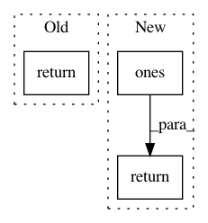

e94a6641dccda6dd7f8ad86fad82e62388548777,keras/initializers/initializers_v2.py,Ones,__call__,#Ones#Any#Any#,163
Before Change
(via `tf.keras.backend.set_floatx(float_dtype)`).
**kwargs: Additional keyword arguments.
return super(Ones, self).__call__(shape, dtype=_get_dtype(dtype), **kwargs)
@keras_export("keras.initializers.Constant",
"keras.initializers.constant",
After Change
raise ValueError("Expected numeric or boolean dtype, got %s." % dtype)
if _PARTITION_SHAPE in kwargs:
shape = kwargs[_PARTITION_SHAPE]
return tf.ones(shape, dtype)
@keras_export("keras.initializers.Constant",
"keras.initializers.constant",
In pattern: SUPERPATTERN
Frequency: 3
Non-data size: 3
Instances
Project Name: keras-team/keras
Commit Name: e94a6641dccda6dd7f8ad86fad82e62388548777
Time: 2021-01-06
Author: scottzhu@google.com
File Name: keras/initializers/initializers_v2.py
Class Name: Ones
Method Name: __call__
Project Name: GPflow/GPflow
Commit Name: a4f0be1139f25c778af40fe543ca14e66f53433d
Time: 2016-05-24
Author: james.hensman@gmail.com
File Name: GPflow/kernels.py
Class Name: Constant
Method Name: K
Project Name: keras-team/autokeras
Commit Name: a8eabdad14eee8a47257248fa271700fcce939cb
Time: 2018-05-01
Author: jhfjhfj1@gmail.com
File Name: autokeras/bayesian.py
Class Name: IncrementalGaussianProcess
Method Name: predict